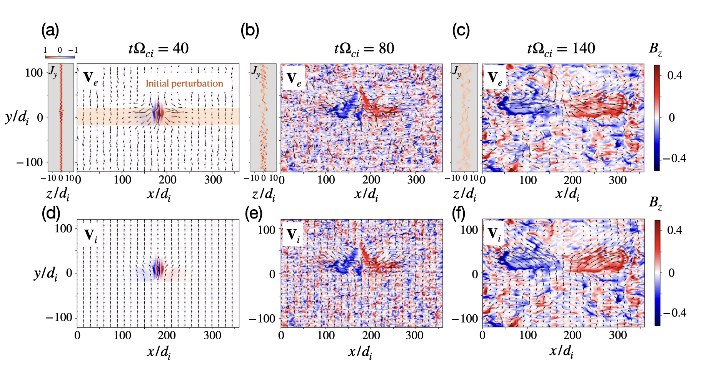

Figure 5: X-line spreading and drift-kink instability

Summary
We study magnetic reconnection X-line spreading in a Harris current sheet using three-dimensional particle-in-cell (PIC) simulations. We found that without drift-kink instability, the X-line spreads in ambient ion-drifting speed in the ion-drifting direction while the X-line barely spreads in the electron-drifting direction. With drift-kink instability, the X-line stops spreading after the instability grows to large amplitudes. The interaction between X-line spreading and drift-kink instability could be important in the context of Earth’s magnetotail.
Abstract
Using three-dimensional particle-in-cell (PIC) simulations, we study the spread of magnetic reconnection X-line. We show that structural asymmetries along the X-line direction develop during its spread. On the plane of the current sheet (i.e., corresponding to the equatorial plane of the magnetotail), sharp cusp-shaped signatures develop along the ion-drifting direction, capturing the spread of the X-line. The spreading is catalyzed by the lower ion pressure from the active diffusion region, and the X-line spreads at the ion-drifting speed of the non-reconnecting current sheet. Along the electron-drifting direction, the X-line barely spreads even though the electron-drifting speed is high within the electron diffusion region, and reconnected flux is transported toward this direction by the Hall effect. This preferential spread in the ion-drifting direction provides an additional explanation for the higher occurrence rate of reconnection events on the dusk side in Earth’s magnetotail. In contrast to the laminar X-line, in a companion run, we demonstrate that the fluctuation and turbulence caused by drift-kink instability only suppress the X-line spreading. Even though the fluctuation breaks the frozen-in condition, it does not lead to the continuous onset of reconnection adjacent to the active region.
Citation
@article{lin2025spreading,
title={The spreading of magnetic reconnection X-line in particle-in-cell simulations--mechanism and the effect of drift-kink instability},
author={Lin, Shan-Chang and Liu, Yi-Hsin and Li, Xiaocan},
journal={Journal of Geophysical Research: Space Physics},
volume={130},
number={2},
pages={e2024JA033494},
year={2025},
publisher={Wiley Online Library}
}